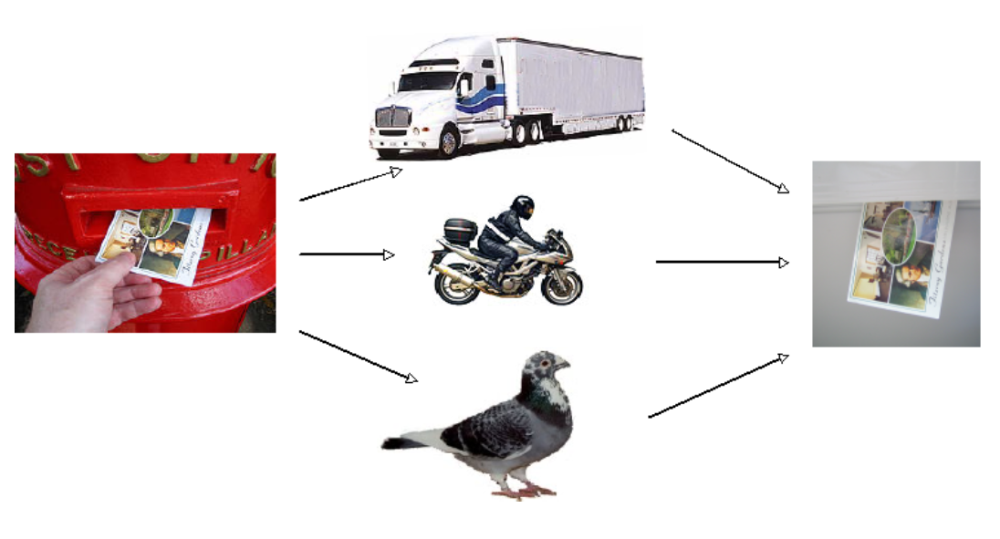

Practical Web Apps
22nd September 2011

Overview
- Architectural Styles: REST (v) RPC-style web services
- Resources
- Verbs: GET, POST, PUT, DELETE
- Content negotiation, canonical URIs and HTTP Range-14
- Can your Website be your API?
- Caching
- Modelling data as resources: documents, tags, searching, filtering
- Client-Side versus Server (JavaScript versus The Web)
- The practical exercise will be getting started with our case-study using Sinatra (a Ruby framework available from http://sinatrarb.com).
Transport Independence
| Data Element | Modern Web Examples |
|---|---|
| resource | the intended conceptual target of a hypertext reference |
| resource identifier | URL, URN |
| representation | HTML document, JPEG image, JSON, XML |
| representation metadata | media type, last-modified time |
| resource metadata | source link, alternates, vary |
| control data | if-modified-since, cache-control |
method safe idempotent semantics resource cacheable
-----------------------------------------------------------
GET | X X X X X |
HEAD | X X X X X |
PUT | X X X |
POST | * |
DELETE | X X X |
OPTIONS | X X X |
-----------------------------------------------------------
PROPFIND | X X X X * |
PROPPATCH | X X X |
MKCOL | * X X |
COPY | X X X |
MOVE | ? X X |
LOCK | X X |
UNLOCK | X X X |
PATCH | * X X |
-----------------------------------------------------------
Browsers are not the only User-Agent
curl http://localhost/ curl -v http://localhost/
A real RESTafarian knows *all* the 'curl' options. — Tim Bray
Creating a Resource
curl -x POST http://localhost/pubs
Lists of Resources
curl -x GET http://localhost/pubs
Progressive enhancement
&
Graceful degredation
&
Graceful degredation
#!